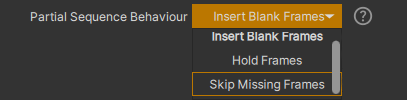

Video Playback
Playheads
Note
「Playhead」という用語は、ビデオの再生や編集ツールに由来しており、画面上に現在表示されているビデオフレームを示す Timeline 上のインジケーターを指します。
xSTUDIO では、各 Playlist が独自の Playhead オブジェクトを持っているため、Playlist を切り替えても、再生レート、ループモード、Compare モードなどの Playhead の設定は Playlist ごとに記憶されます。

The Playback transport controls.
Default Keyboard Shortcut |
Action |
|---|---|
Spacebar |
Start/stop playback. |
I |
Set the ‘in’ loop point. |
O |
Set the ‘out’ loop point. |
P |
Toggle in/out loop region or full duration |
J |
Play backwards. Press repeatedly to got into fast rewind. |
K |
Stop playback. |
L |
Play forwards. Press repeatedly to go into fast forward. |
Left Arrow |
Step forwards one frame. |
Right Arrow |
Step backwards one frame. |
Down Arrow |
Step to start of next media item in timeline/String compare mode |
Up Arrow |
Step to start of previous media item in timeline/String compare mode |
Playhead Loop Modes
メディアを再生する際の play once・loop・ping-pong の切り替えには、Loop モードボタンを使用します。
Playhead Rate
Playhead のレートは、Toolbar にある「Rate」ボタンを左右にクリック＆ドラッグすることで調整できます。Transport Controls セクションを参照してください。Rate は、再生中に Playhead が進む速度に適用される単純な乗数です。たとえば、値が 0.5 の場合はメディアが半速で再生されます。ボタンをダブルクリックすると 1.0 にリセットされます。
Playhead Cache Behaviour
xSTUDIO は、表示に必要となる前にビデオデータを常に読み込み、デコードしようとします。画像データはイメージキャッシュに保存され、画面への描画に備えます。xSTUDIO がこれを効率的に行うには、ユーザーがその挙動を理解していると役立ちます。
メディアをアクティブに再生していない場合、表示するために新しいメディアを選択したとき、または Playhead の位置が移動したときはいつでも、xSTUDIO は表示中のクリップのフレーム範囲を使い果たすか、キャッシュが満杯になるまで、Playhead の位置から前方に向かって画像の読み込みを開始します。新しい画像用のスペースを確保するために、以前に読み込まれた画像はキャッシュから削除されます。
キャッシュのステータスは Timeline 上に緑色の水平バーで表示されます。xSTUDIO がバックグラウンドでフレームを読み込むにつれてバーが伸びていくのが見えるため、一目で分かります。そのため、高解像度の EXR 画像など、ディスクからの読み込みが遅いメディアを表示する場合は、再生/ループを開始する前に xSTUDIO がフレームをキャッシュするのを待つというワークフローになります。キャッシュのサイズ (Preferences パネルで設定) によって、読み込み可能な最大フレーム数が制限されます。
ほとんどの場合、xSTUDIO はメディアの要求フレームレートでキャッシュされたフレームを再生できるはずです。Viewer はグラフィックカードの性能を最大限に引き出すように最適化されていますが、非常に高解像度の画像を表示しようとしており、コンピューターのビデオハードウェアが要求されるデータ転送速度に対応できない場合は、再生が遅くなることがあります。
一般的な多くの圧縮ビデオストリームコーデックや、DWA/DWB で圧縮された EXR のように、再生レートよりも速くデコードできるメディアの場合、xSTUDIO はオンデマンド再生のためにディスクからデータをストリーミングできるため、xSTUDIO のキャッシュアクティビティをほとんど意識する必要はありません。
Missing Frames Behaviour
xSTUDIO がフレームベースのメディア (つまり、EXR や JPEG ファイルのように、各ビデオフレームがディスク上の個別のファイルであるもの) を読み込む際、想定される範囲内にある特定のフレーム番号に対応するファイルがディスク上に存在しない場合の挙動を 3 つの中から選択できます。これは、たとえば一部のフレームは未レンダリングであるものの、フレーム範囲内の他のフレームは完了しているような CG レンダーを表示するときに重要となります。このプリファレンスを変更するには、File->Preferences->Preference Manager メニューオプションに移動し、Preference Manager ダイアログの「General」タブに移動します。
{kind=link}

The missing frames preference
Insert Blank Frames 欠落しているフレームがブランクフレームに置き換えられ、画像シーケンスのフレーム範囲が維持されます。なお、欠落している、または読み込めないフレームは、トランスポートバーのタイムスライダーにあるフレームキャッシュインジケーター内に赤色のバーで表示されます。
Hold Frames 欠落しているフレームが、読み込むことができた直前のフレームに置き換えられます。ホールドされたフレームは、フレームキャッシュインジケーター内にオレンジ色のバーで表示されます。
Skip Missing Frames このオプションを使用すると、該当する Media Source 項目のフレーム範囲が縮小され、欠落しているフレームが無視されます。したがって、たとえば render_v01.1001.exr、render_v01.1004.exr、render_v01.1011.exr、render_v01.1021.exr というファイル群で構成される画像シーケンスがある場合、作成される Media Source 項目のデュレーションは 4 フレームのみになります。